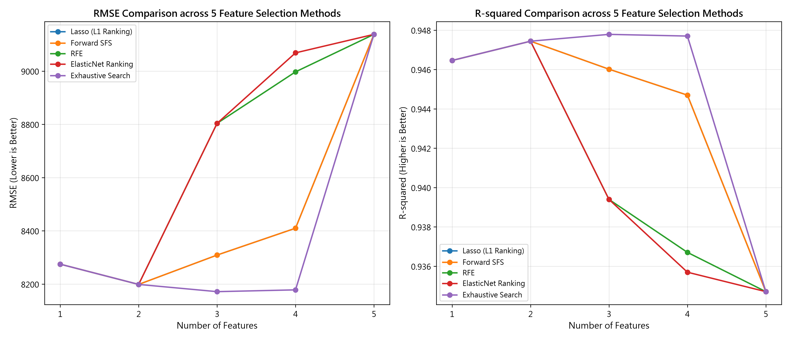

5 大最佳回歸演算法評測排行榜 (Benchmark Ranking)
在相同資料集（80% 訓練集 / 20% 測試集 / 5-Fold 交叉驗證）下之嚴謹橫向評測結果：
| 排名 |
機器學習演算法 (Algorithm) |
測試集 $R^2$ |
測試集 RMSE |
測試集 MAE |
5-Fold CV $R^2$ |
特性評語 |
| 🥇 1 |
隨機森林 (Random Forest) |
0.969947 |
$6,199.55 |
$4,974.43 |
0.922150 |
全場冠軍！非線性集成樹，誤差大幅降低 32% |
| 🥈 2 |
梯度提升 (Gradient Boosting) |
0.937074 |
$8,970.81 |
$6,718.32 |
0.923530 |
亞軍！Boosting 逐步修正前序殘差 |
| 🥉 3 |
套索回歸 (Lasso Regression, L1) |
0.936950 |
$8,979.66 |
$7,398.61 |
0.921579 |
季軍！L1 懲罰稀疏化係數，具自帶特徵篩選功能 |
| 4 |
嶺回歸 (Ridge Regression, L2) |
0.935167 |
$9,105.71 |
$7,487.27 |
0.919799 |
殿軍！L2 平滑係數，有效抑制多重共線性 |
| 5 |
多元線性回歸 (Linear Regression, OLS) |
0.934707 |
$9,137.99 |
$7,514.29 |
0.917924 |
基準模型！計算最快速、參數方程式可解釋性最高 |
Phase 1: Business Understanding (商業理解)
新創投資具備高度不確定性。透過機器學習分析真實 50 家新創公司財務花費，量化不同投入項目（研發、行政、行銷）產生的投資回報率（ROI），協助創投評估融資決策。
- 目標定義：建立利潤預測模型，找出獲利槓桿最高的花費特徵。
- 成功標準：決定係數 $R^2 \ge 0.90$，且 RMSE 誤差在可解釋範圍內。
- 利益關係人：創投經理人、新創執行長、財務諮詢專家。
Phase 2: Data Understanding (資料理解)
載入 Kaggle 50 Startups 資料集（共 50 筆紀錄，5 個欄位），確認資料品質良好（0 個缺失值）。
| R&D Spend |
Administration |
Marketing Spend |
State |
Profit |
| $165,349.20 | $136,897.80 | $471,784.10 | New York | $192,261.83 |
| $162,597.70 | $151,377.59 | $443,898.53 | California | $191,792.06 |
| $153,441.51 | $101,145.55 | $407,934.54 | Florida | $191,050.39 |
| $144,372.41 | $118,671.85 | $383,199.62 | New York | $182,901.99 |
| $142,107.34 | $91,391.77 | $366,168.42 | Florida | $166,187.94 |
Phase 3: Data Preparation (資料準備)
針對類別型特徵（State）進行獨熱編碼（One-Hot Encoding），並務必避開 虛擬變數陷阱 (Dummy Variable Trap)。
💡 為什麼要 drop_first=True？
若有 $k$ 個州（California, Florida, New York），若編碼為 3 個變數，其總和必為 1（$X_{NY} = 1 - X_{CA} - X_{FL}$），形成完全線性相依（Multicollinearity），會破壞線性回歸矩陣求逆的穩定性。因此必須拋棄 1 個虛擬變數作為基準類別。
# 切分 X 與 y，並使用 drop_first=True 避開共線性
X = pd.get_dummies(data.drop('Profit', axis=1), columns=['State'], drop_first=True, dtype=int)
y = data['Profit']
X_train, X_test, y_train, y_test = train_test_split(X, y, test_size=0.2, random_state=0)
Phase 4: Modeling (模型建立)
多元線性回歸擬合方程式：
$$\text{Profit} = 42554.17 + 0.7735 \times \text{R\&D} + 0.0329 \times \text{Admin} + 0.0366 \times \text{Marketing} - 959.28 \times \text{FL} + 699.37 \times \text{NY}$$
係數實務意涵：研發係數達 0.7735，表示每增加 10,000 美元研發費用，利潤平均提升 7,735 美元；相比之下，行政管理與行銷支出係數僅約 0.03，影響力極微。
Phase 5: Forward Feature Selection (前向特徵選取實驗)
透過貪婪演算法比較 1 到 5 個特徵子集之表現：
| 特徵數 |
選取特徵組合 (Selected Features) |
RMSE |
$R^2$ |
結論 |
| 1 |
R&D Spend |
8274.87 |
0.946459 |
單一最強特徵 |
| 2 |
R&D Spend, Marketing Spend |
8198.80 |
0.947439 |
★ 全域最佳特徵組合 |
| 3 |
R&D Spend, Marketing Spend, State_New York |
8309.06 |
0.946015 |
誤差略增 |
| 4 |
R&D Spend, Marketing Spend, State_New York, State_Florida |
8409.92 |
0.944697 |
誤差持續上升 |
| 5 |
R&D Spend, Marketing Spend, State_New York, State_Florida, Administration |
9137.99 |
0.934707 |
加入行政變數表現最差 |
5 大特徵選取方法評測折線圖 (RMSE & R-squared 橫向對比)

📌 圖表包含 Lasso (L1 Ranking)、Forward SFS、RFE、ElasticNet Ranking、Exhaustive Search 5 大特徵選取方法在 1 到 5 個特徵下的 RMSE (越低越好) 與 R² (越高越好) 走勢。
Phase 6: Deployment (模型部署與封裝)
將訓練好的 5 大模型與特徵名稱清單透過 gzip 與 pickle 壓縮封裝：
# 5 大模型整體壓縮封裝
import gzip, pickle
with gzip.open("startup_lr_model.pkl.gz", "wb") as f:
pickle.dump({"models": fitted_models, "features": list(X.columns)}, f)
# 產線推論
with gzip.open("startup_lr_model.pkl.gz", "rb") as f:
pkg = pickle.load(f)
rf_prediction = pkg["models"]["隨機森林 (Random Forest)"].predict(new_data)